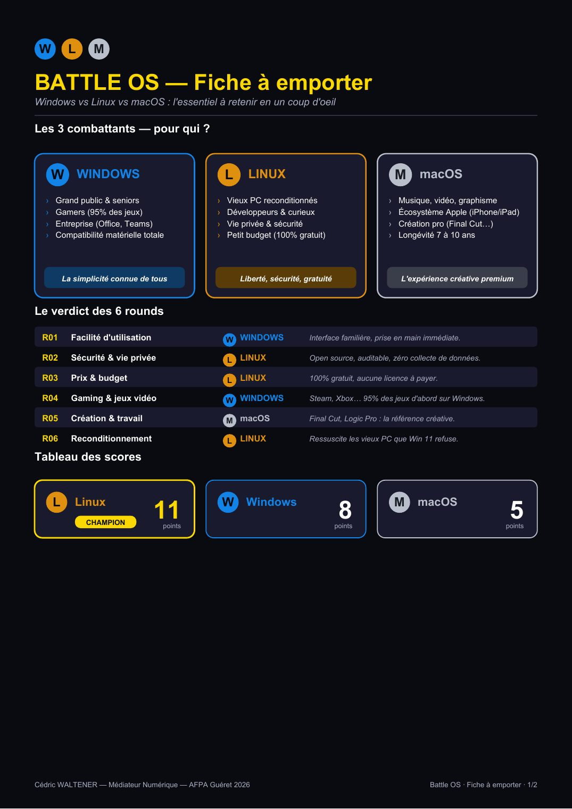
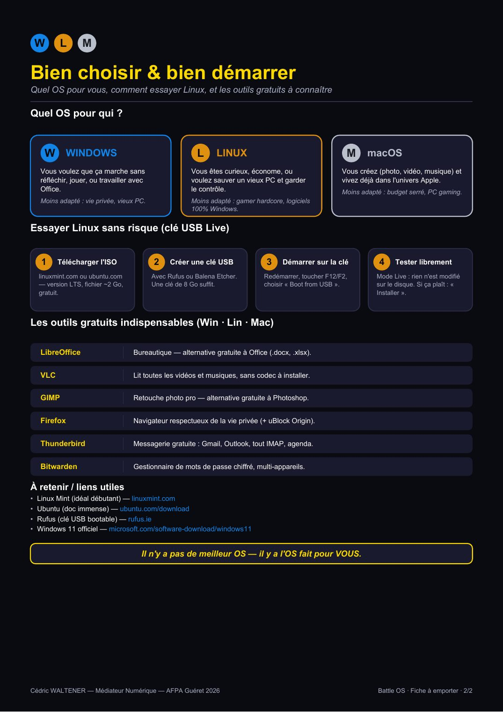

⏳ Vérification de votre niveau…


📄 Texte de la page (traduisible — les images ci-dessus restent en français)
W L M
BATTLE OS — Fiche à emporter Windows vs Linux vs macOS : l'essentiel à retenir en un coup d'oeil
Les 3 combattants — pour qui ?
W WINDOWS L LINUX M macOS › Grand public & seniors › Vieux PC reconditionnés › Musique, vidéo, graphisme › Gamers (95% des jeux) › Développeurs & curieux › Écosystème Apple (iPhone/iPad) › Entreprise (Office, Teams) › Vie privée & sécurité › Création pro (Final Cut…) › Compatibilité matérielle totale › Petit budget (100% gratuit) › Longévité 7 à 10 ans
La simplicité connue de tous Liberté, sécurité, gratuité L'expérience créative premium
Le verdict des 6 rounds
R01 Facilité d'utilisation W WINDOWS Interface familière, prise en main immédiate.
R02 Sécurité & vie privée L LINUX Open source, auditable, zéro collecte de données.
R03 Prix & budget L LINUX 100% gratuit, aucune licence à payer.
R04 Gaming & jeux vidéo W WINDOWS Steam, Xbox… 95% des jeux d'abord sur Windows.
R05 Création & travail M macOS Final Cut, Logic Pro : la référence créative.
R06 Reconditionnement L LINUX Ressuscite les vieux PC que Win 11 refuse.
Tableau des scores
L Linux W Windows M macOS CHAMPION 11 points 8 points 5 points
Cédric WALTENER — Médiateur Numérique — AFPA Guéret 2026 Battle OS · Fiche à emporter · 1/2
W L M
Bien choisir & bien démarrer Quel OS pour vous, comment essayer Linux, et les outils gratuits à connaître
Quel OS pour qui ?
W WINDOWS L LINUX M macOS Vous voulez que ça marche sans Vous êtes curieux, économe, ou Vous créez (photo, vidéo, musique) et réfléchir, jouer, ou travailler avec voulez sauver un vieux PC et garder vivez déjà dans l'univers Apple. Office. le contrôle. Moins adapté : budget serré, PC gaming. Moins adapté : vie privée, vieux PC. Moins adapté : gamer hardcore, logiciels 100% Windows.
Essayer Linux sans risque (clé USB Live)
1 Télécharger l'ISO 2 Créer une clé USB 3 Démarrer sur la clé 4 Tester librement linuxmint.com ou ubuntu.com Avec Rufus ou Balena Etcher. Redémarrer, toucher F12/F2, Mode Live : rien n'est modifié — version LTS, fichier ~2 Go, Une clé de 8 Go suffit. choisir « Boot from USB ». sur le disque. Si ça plaît : « gratuit. Installer ».
Les outils gratuits indispensables (Win · Lin · Mac)
LibreOffice Bureautique — alternative gratuite à Office (.docx, .xlsx).
VLC Lit toutes les vidéos et musiques, sans codec à installer.
GIMP Retouche photo pro — alternative gratuite à Photoshop.
Firefox Navigateur respectueux de la vie privée (+ uBlock Origin).
Thunderbird Messagerie gratuite : Gmail, Outlook, tout IMAP, agenda.
Bitwarden Gestionnaire de mots de passe chiffré, multi-appareils.
À retenir / liens utiles • Linux Mint (idéal débutant) — linuxmint.com • Ubuntu (doc immense) — ubuntu.com/download • Rufus (clé USB bootable) — rufus.ie • Windows 11 officiel — microsoft.com/software-download/windows11
Il n'y a pas de meilleur OS — il y a l'OS fait pour VOUS.
Cédric WALTENER — Médiateur Numérique — AFPA Guéret 2026 Battle OS · Fiche à emporter · 2/2